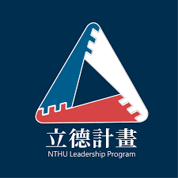
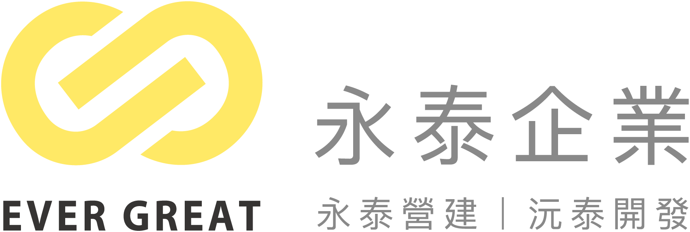
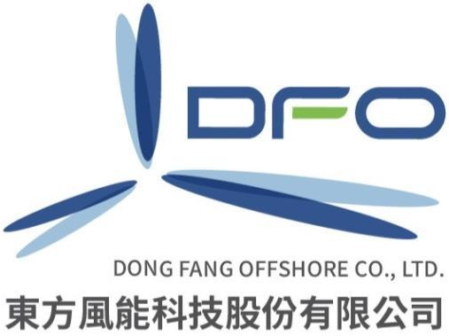
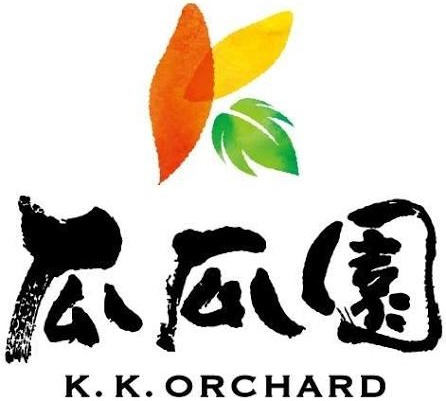

D1釐清目標Define the Goal
先理解自己真正想完成的是什麼，而不是急著開始努力。
鄉育的初衷
我們以決策設計（Decision Design）作為青年培育的方法，一套可以透過反覆練習、逐步建立、陪伴青年一生的思考系統。
透過尋路計畫（Pathfinder Program）完整的 16 週培育歷程，引導大學生除了探索自己，也在每次課程、專案與團隊合作中，持續觀察自己的思考模式、情緒反應、溝通傾向與決策行為，看見過去沒有察覺的習慣與盲點，逐步建立更適合自己的決策方針。
決策設計四階段 · Decision Design
鄉育的賦能核心是決策設計：面對真實情境，設計出一條屬於自己的選擇路徑。
D1釐清目標Define the Goal
先理解自己真正想完成的是什麼，而不是急著開始努力。
D2梳理關鍵Decide What Matters
資訊不是越多越好，而是跟目標越有關越好。
D3設計規劃Design SMART Plans
沒有最好的方法，只有最適合當下情境的方法。
D4行動迭代Develop through Action
好的決策，是透過持續行動與反思得出的，而不是一次到位。
計畫成果
我們在意的不是完成一堂課，而是這些能力能不能被大學生帶進下一個真實情境——
這些累積，正在變成看得見的數字。
累積參與高中生與大學生
合作學校與企業
課堂與專案數量
服務過縣市
前往創造價值的路上
鄉育需要的不只是課程，也是一個讓青年接觸真實世界的支持網絡。不同角色，都能用自己的方式參與其中。
合作夥伴
從大專院校、高中到企業，鄉育的影響力來自一群共同支持青年尋路的學校與夥伴——
他們提供場域、導師、資源與真實情境，讓能力得以在現場被練習與驗證。
合作學校與組織




合作企業





支持青年成長
每一份支持，都讓更多沒有資源的青年，
有機會練習面對真實世界的判斷力與行動力。
立即支持鄉育，成為他們路上的一盞燈。